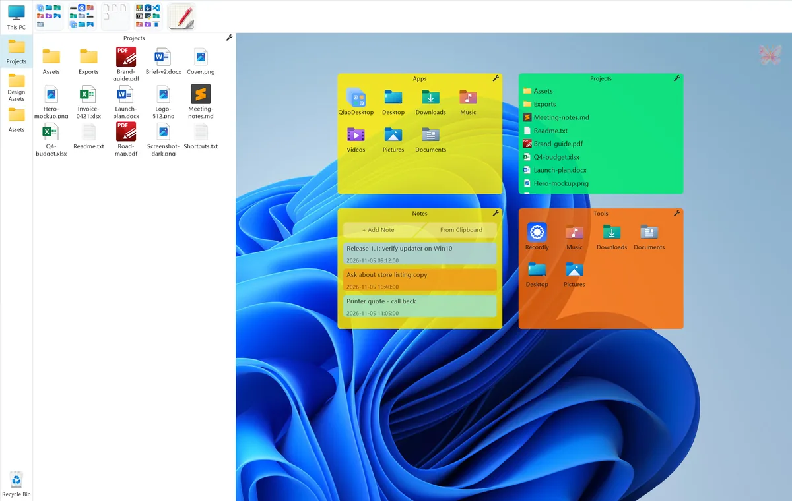
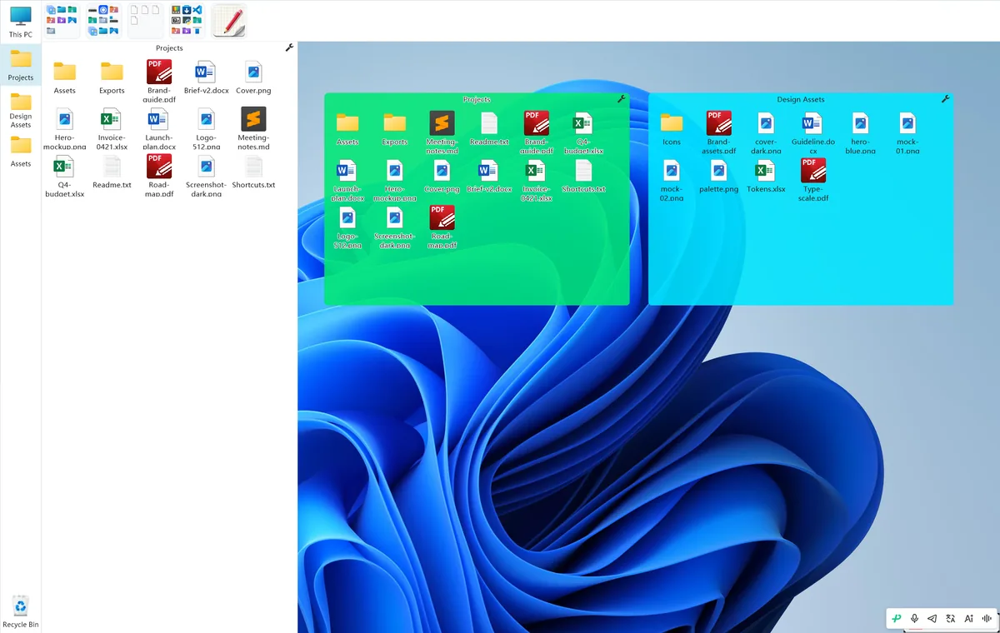

使用指南
巧桌面怎么用
三篇讲清最不直观的三件事：怎么把目录钉到屏幕边、怎么把盒子收起来、怎么在任意窗口里叫出盒子。每一步按实际操作写，不绕概念。


01映射栏
把常用目录钉在屏幕边上
右键加目录、点开就是资源管理器、双击空白返回上一级，以及宽度和图标大小到底在哪改。
阅读全文→

02收纳栏
收起来的是盒子，不是文件
右键收纳、悬停展开、拖卡片排序、换停靠位置；以及为什么拖盒子进栏里没用。
阅读全文→

03浮沉与隐藏
不用切回桌面，也能拿到盒子
按一下浮到当前窗口之上，按住保活，松手后自动沉回；以及平时态、呼出态分别怎么设。
阅读全文→
其余能力，一眼扫过
上面三篇是核心操作；下面这些不用专门学，知道在哪就行。
| 能力 | 说明与入口 |
|---|---|
| 盒子形态 | 普通、折叠、图标化、入坞、展开。折叠后只剩一条标题栏，双击标题栏空白处可还原。 |
| 文件面板双模式 | 「资源管理器」（默认）与「映射盒子」自绘视图，在映射栏右键「切换文件显示面板」里换，不在设置中心。 |
| 壁纸 | 图片壁纸与视频壁纸，手动切换随时可用。 |
| 便签盒 | 直接在桌面盒子里记东西，支持从剪贴板粘贴。 |
| 游戏模式 | 托盘菜单「游戏模式」或 Ctrl+Alt+G 手动开启，隐藏全部盒子与边缘热条；不自动识别游戏进程。 |
| 备份与恢复 | 设置中心第 3 页，自动保留最近 20 条备份，可把整套布局迁到新电脑。 |
关于试用：整理、盒子、映射栏、收纳栏、浮沉热键、托盘呼出、游戏模式与备份恢复都不受试用限制，到期仍可正常使用。PRO 解锁的是超级边缘、自动下沉最短 0.3 秒、按住 Ctrl 临时解锁锁定盒、动态/视频壁纸与壁纸定时自动切换。